This page shows the project's results. The methodology, the design decisions and the limitations are documented in the repository's README.
Real hourly data and day-ahead machine learning (2018-2025)
70,128 real hours of the SEN from the Coordinador's public hourly-generation file, with Santiago temperature and holidays. Every input is at least 48 hours old; LightGBM is trained on 2018-2023, tuned on 2024 and tested on 2025, which it never saw.
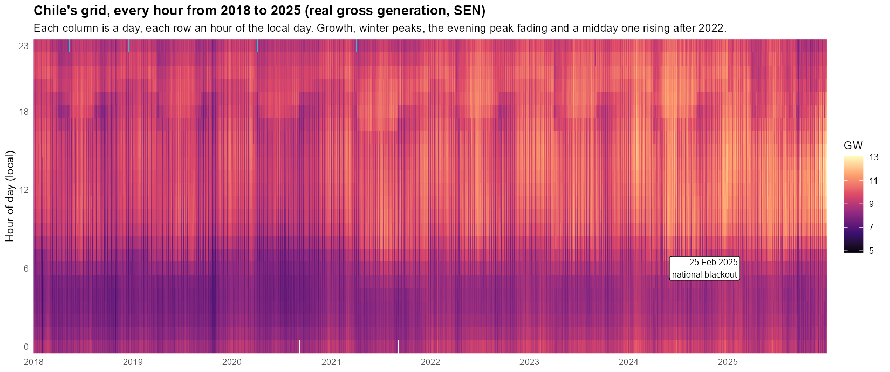
Each column is a day, each row an hour. The grid grows, winter evenings are the old peak, and from 2023 the brightest band moves to midday. The 2025 sheet listed its hours alphabetically; the 25 February 2025 blackout is what gave it away.
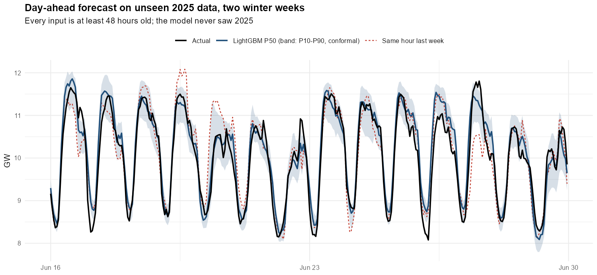
Two winter weeks of 2025 with the median forecast and its conformal P10-P90 band, against the same hour a week earlier.
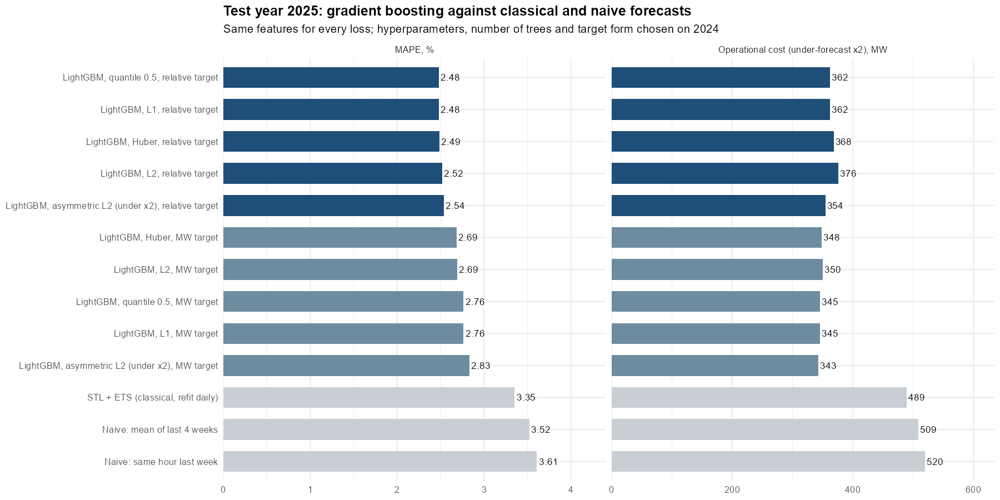
On 2025, LightGBM on a relative target (each hour divided by last week's mean) scores 2.48% MAPE against 2.69% in MW, 3.35% for STL + ETS and 3.61% for the weekly naive forecast; the asymmetric loss trades a little MAPE for a lower cost of under-forecasting.
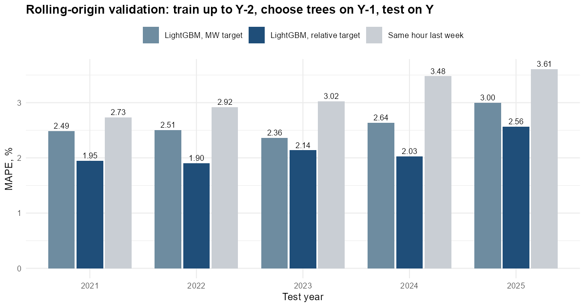
The relative target beats the MW target and the naive forecast in every test year from 2021 to 2025.
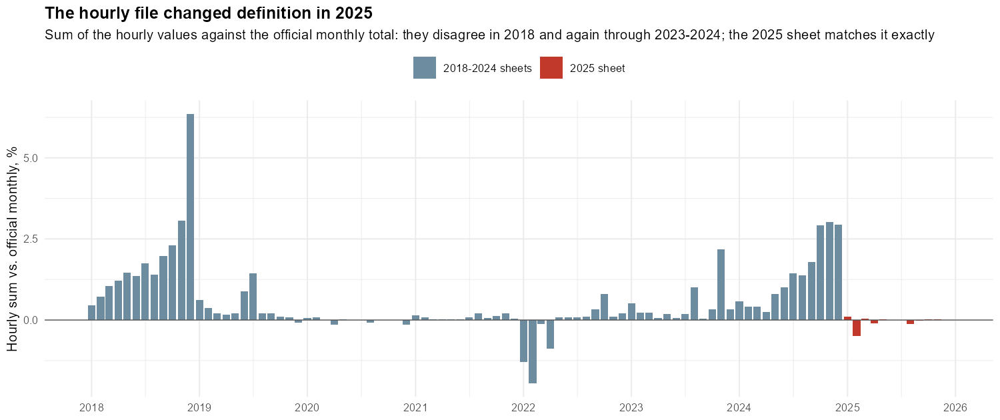
The hourly file changed definition in 2025: its monthly sums now equal the official total, and the evening hours drop by about 1 GW, which is why 2025 is the hardest year for every method.
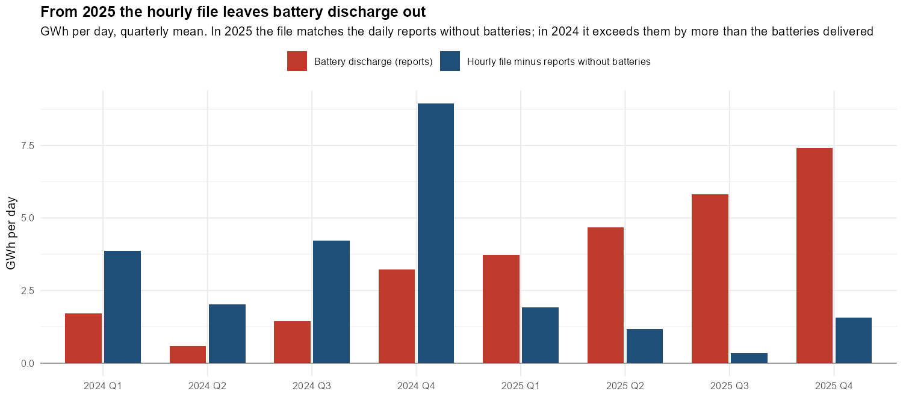
The Coordinador's daily operation reports list each day's generation by technology, batteries included (706 of 731 days of 2024-2025 parsed from the PDFs). In 2025 the hourly file matches the reports' total without batteries to within 1.3 GWh a day, while batteries delivered 5.4 GWh a day, mostly in the evening: the 2025 file stopped counting battery discharge. In 2024 the file exceeds even the total with batteries by about 3 GWh a day, which remains unexplained.
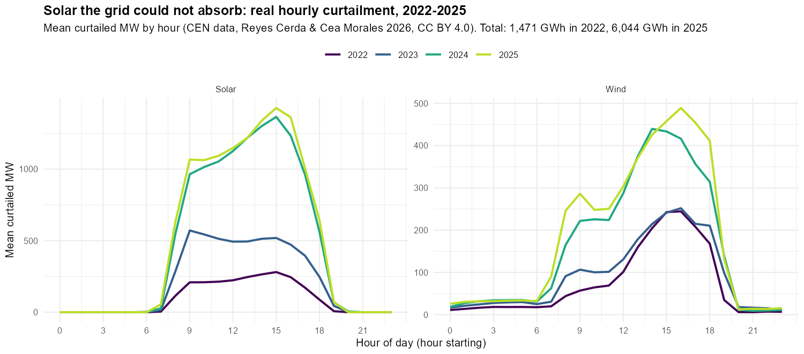
Solar and wind energy the grid could not absorb, aggregated from the plant-level hourly dataset of Reyes Cerda and Cea Morales (Zenodo, CC BY 4.0): from 1,471 GWh in 2022 to 6,044 GWh in 2025, almost all of it solar between 9 am and 6 pm, the same hours where gross generation now peaks.
Classical statistical models on real demand
ARIMA + Fourier, TBATS, SARIMAX, ETS and GARCH now run on the same real hourly demand (2024-2025), with solar and wind reconstructed from real weather and anchored to each day's real energy from the daily reports. Until this round only the monthly energy of the series was real. The headline changed: on the 14-day holdout, 18-31 December 2025, the same hour of the previous day scores 5.81% MAPE, against 7.01% for TBATS and 7.39% for ARIMA + Fourier. On the simulated series both beat it (4.28% and 4.54% against 6.73%). The holdout is Christmas and New Year, and in the hourly rolling-origin validation the worst window (8.57%) is the one containing Fiestas Patrias: none of these models knows a day is a holiday, while the LightGBM model above, which does, scores 2.48% over all of 2025. ETS on daily demand is the classical model that survives real data (1.91% against 2.78% for the weekly naive forecast in cross-validation). The GARCH estimate on wind ramps is not robust: anchoring wind to daily instead of monthly real energy moves it from α 0.010 / β 0.989 to α 0.363 / β 0.573.
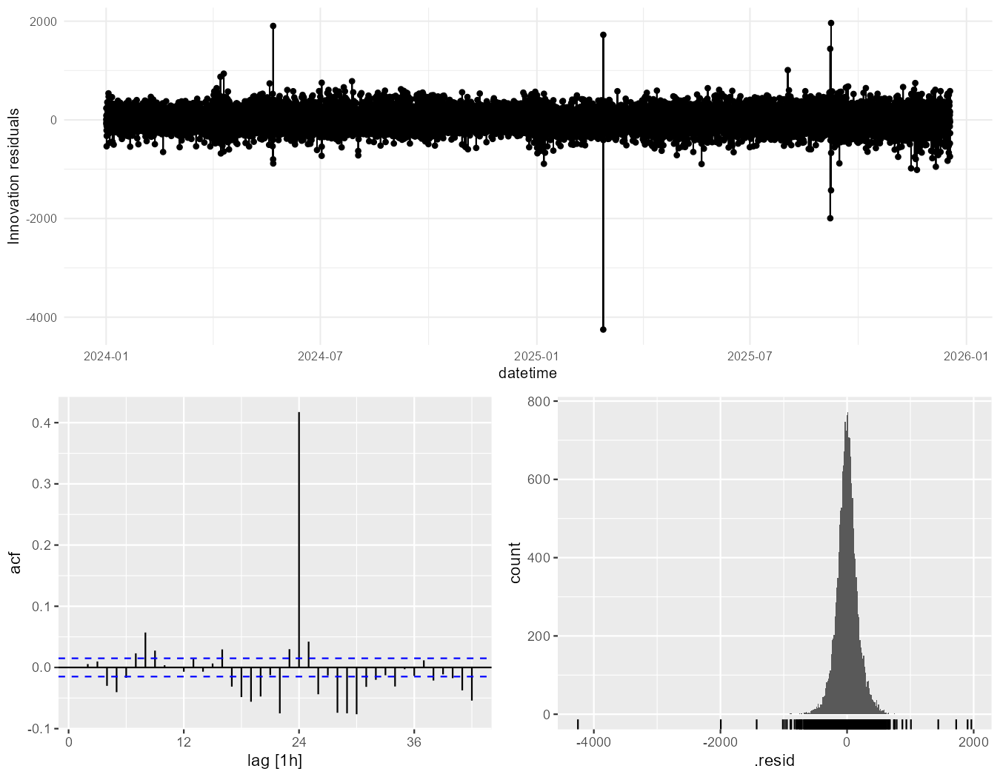
How to read it: the three panels are the residual series, its ACF and its distribution. The lag-24 autocorrelation is 0.417 with the daily Fourier basis at its Nyquist limit (0.436 with K=4, 0.454 with TBATS), and Ljung-Box rejects white noise for all three. On the simulated series the known generating process proved the spike was a modelling artifact; on real data part of it is probably genuine, since weather, holidays and outages persist from one day to the next. The largest residual by far, about 4,250 MW, is on 26 February 2025, where the imputed blackout hours meet the real recovery.
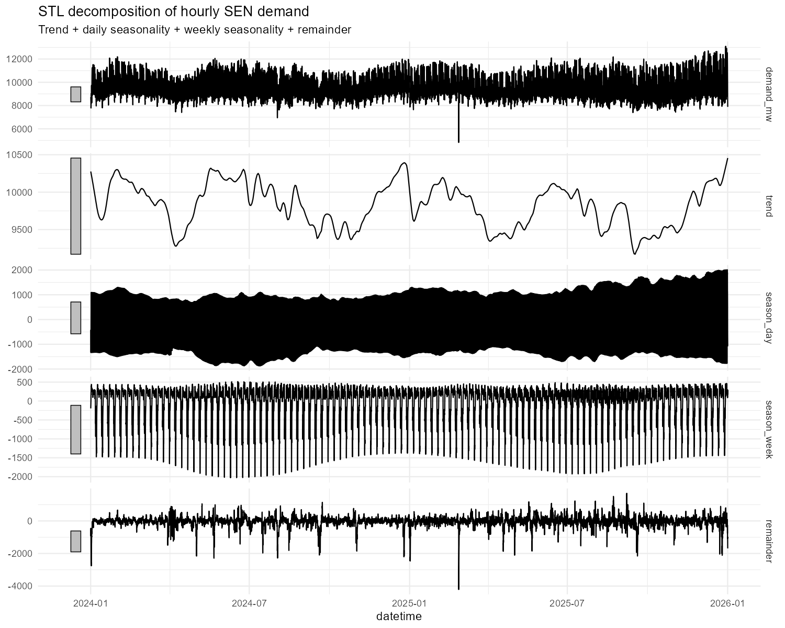
Trend, daily season, weekly season and remainder of real hourly demand. The trend moves between about 9,200 and 10,450 MW. The remainder is where real data differs most from the simulated series: sharp negative spikes on New Year, Christmas, 1 May, Navy Day and Fiestas Patrias, and the deepest one on 26 February 2025, the recovery after the national blackout. The remainder's variance is now larger than the trend's and twice what the simulator produced.
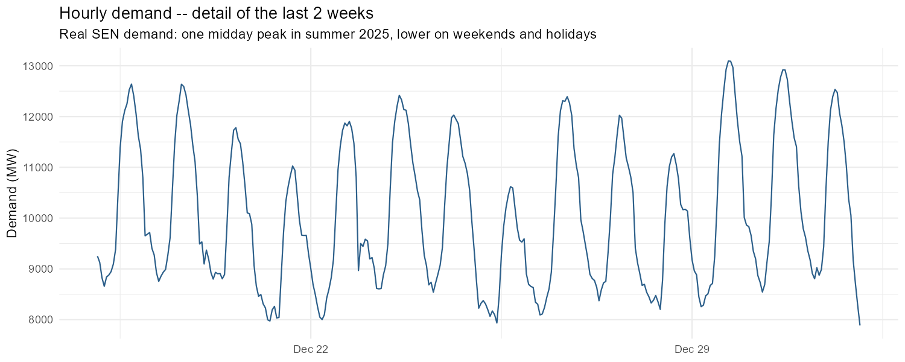
The last two weeks of 2025: one peak at midday rather than the morning and evening peaks the simulator drew, lower weekends, and Christmas Day well below the rest. The single midday peak is summer, high solar and a 2025 file that no longer counts battery discharge in the evening.
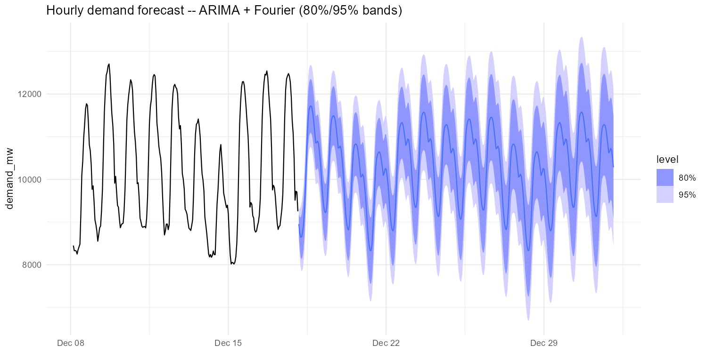
Ten days of context and the fourteen-day forecast: the model repeats an average weekly shape and cannot anticipate the Christmas and New Year dips, which is where its error on the holdout comes from.